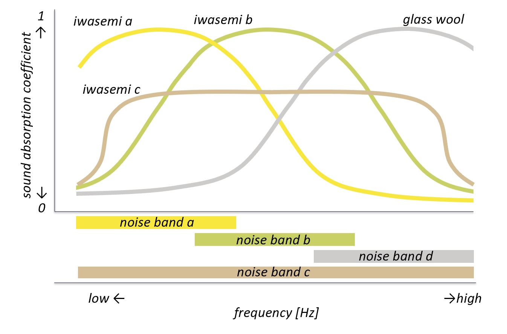
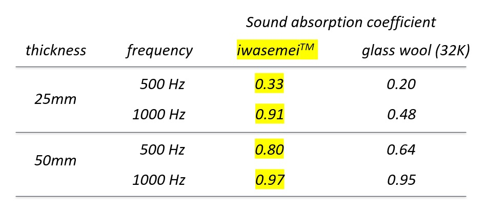
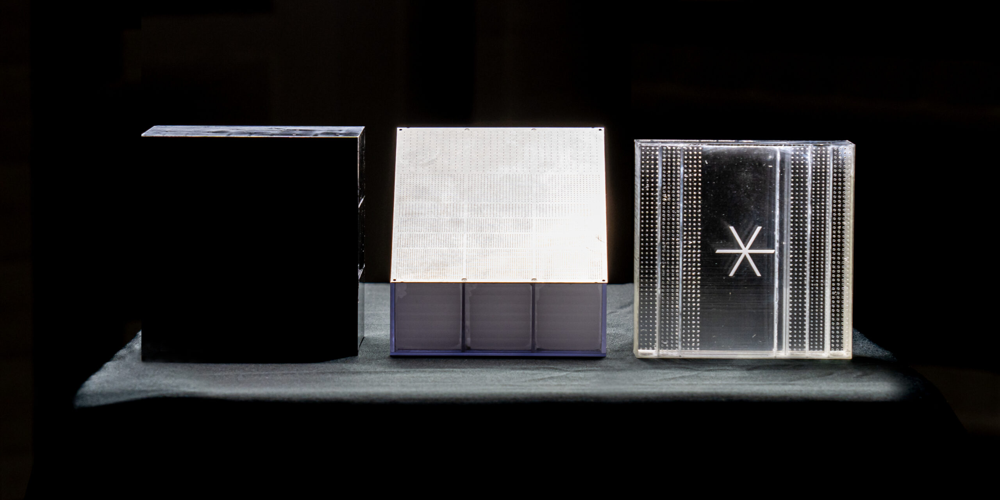

任意の周波数帯で高い吸音率を実現
iwasemi™（イワセミ）は、音響メタマテリアル技術にピクシーダストテクノロジーズ（以下、PxDT）
独自の吸音設計技術を応用することによって開発された吸音材です。iwasemi™の適用シーンは、工事、
建材、什器、鉄道、自動車など社会の様々な分野にわたります。iwasemi™吸音材には下記の３つの特徴があります。
① 吸音周波数特性の柔軟性
② 高い吸音率と薄型化の両立
③ 素材の選択自由度と加工自由度の高さ
① 吸音周波数特性の柔軟性
グラスウールなどの素材を用いた一般的な吸音材は、原理的に高帯域に行くにつれ吸音率が上がる性質をもっています。 一方、iwasemi™は特定の周波数帯のみ吸音率が上がる性質、低帯域から高帯域まで万遍なく高い吸音率を示 す性質など、適用シーンに応じた柔軟な吸音周波数特性を実現することができます。
② 高い吸音率と薄型化の両立
一般的な吸音材で吸音率を上げるためには、吸音材を厚くする必要があります。 一方、iwasemi™では吸音材を厚くすることなく、吸音率を上げることができます。つまり、一般的な吸音材と同等の吸音率を保ったまま、薄型化を実現することができます。
③ 素材の選択自由度と加工自由度の高さ
一般的な吸音材は、グラスウールなどの多孔質構造です。そのため、意匠性や強度が制限されます。 一方、iwasemi™は、共鳴構造を採用しているので、様々な素材（例えば、ABS（写真：左）、ステンレス鋼（写真：中央）、アクリル（写真：右））を用いて、高い吸音率を実現することができます。それにより、透明色を含むカラーバリエーション、表面処理によるテクスチャ表現、といった意匠性を考慮した吸音材や、強度の高い吸音材を実現することができます。 また、吸音材を応用製品と一体に成形することもできるので、応用製品の強度向上・軽量化に寄与することができます。
音響メタマテリアル技術を応用した独自の吸音設計技術
メタマテリアルとは、波長以下の微細な周期形状を物質に付与することで、自然界にはない振る舞いをする人工物質の総称です。音波の分野へこの概念を適用することにより、自然界にはない音響特性を持った物質を生成する技術が音響メタマテリアル技術です。 PxDTは、多数の共鳴吸音構造を周期的に並べたメタマテリアルの基本構造（以下、スーパーセル）を事前設計によりライブラリ化しており、その中から適用シーンに応じて適切なスーパーセルを選択、さらに詳細な設計パラメータを最適化することによりニーズに応じた吸音性能を持った吸音材を生成しています。
日々増大する騒音課題の解決に向けて
産業革命以降、大きな音を発生し続ける機械の増加、資本主義の発達にともなう生活の多様化に伴い、現代に暮らす私たちは、工事現場における建設作業の騒音、自動車・鉄道・飛行機などの交通インフラの騒音、店舗の営業などの経済活動の騒音、家庭生活の騒音など、様々な騒音に悩まされるようになりました。
特に、新型コロナウィルス感染症（COVID-19）に伴う家庭内でのリモートワークの急速な拡大により、“巣ごもり騒音”と呼ばれる新たな騒音が生まれ、警視庁への通報が急増したとの報道もあります。オフィス内でのWeb会議の増加により、隣席・隣室の会議中の声に対する不快感・情報漏洩の懸念も高まっています。プライバシー保護の意識向上によって、騒音を問題視する人も増え続けています。
このように、私たちの生活環境・生活スタイルの急激な変化に伴い、騒音問題は課題としてクローズアップされるようになり、その解決への期待は日増しに大きくなっています。
PxDTは、Digitally Rebalanced.（デジタルリバランス）のヴィジョンステートメントのもとで騒音問題を解消すべく、計算機による高度な吸音設計技術による革新的な吸音材iwasemi™を開発しました。
PxDTでは今後もiwasemi™の基本構造追加や標準製品の拡充、カスタマイズ品の開発などを継続して行い、幅広い分野の騒音課題/ニーズに対応することで、社会全体の騒音問題解消を推進してまいります。